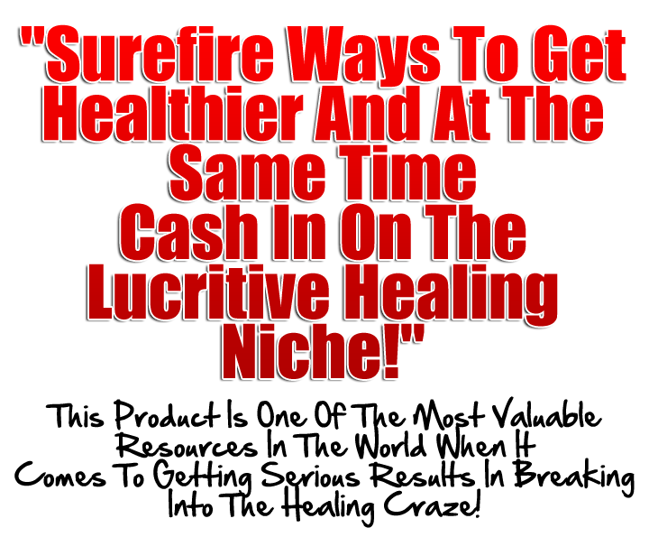

Dear Friend,
Do you prefer to be fitter but don't know where to
start? Are you sick of feeling debilitated and wiped out? Are you
losing your verve, your health, your "sparkle" and would like to
recover it?
Most individuals want keener health, more vitality, and verve, but are
combating feverish schedules and no true time to inspect and repair
their lives. Many people have no idea how to go about figuring out where they
are or how to change it.
Is this true for you? Then please continue on as you need to discover
the secrets that increase your overall wellbeing everyday!
The truth is:
You know why most people have a tendency to not
achieve the success they desire in their health and overall life? It's
because they don't know that a lot of us run through the day with so
many responsibilities that we don't have even an instant to treat
ourselves. Coping with deadlines at work, attending to the kids,
replying to that demanding client--we respond and react to the needs
of other people. It's time to do a few merciful things to reward
yourself.
Which brings us to a very important aspect I must talk about here:
People who struggle in overall health and life will find these things in common:
- They don't know how to get their vigor back.
- They have no idea how to regenerate their soul.
- They are struggling with fixing their diet.
- They also don't understand how to better their digestion.
- Many more problems untold…
Well don't worry…
With the strategies that I’m about to let you in on , you will have no problems when it comes to learning the truth behind gaining overall wellness!
Introducing…
“The Amazing Art Of Acupuncture”

In this book, you will learn all about:
- Get Your Vigor Back
- Regenerate Your Soul
- Fix Your Diet
- Better Your Digestion
- Connect
- Much MORE!
Let’s face it…You would like to de-stress, but where to start? Work stress alone has been associated to depression, heart conditions, and additional ailments. Short of switching jobs, how may you de-stress to help you unwind? How do you make time for acquaintances, loved ones, and leisure? Skin is the body’s mirror of our inside health and wellness, both physical and emotional. For instance, drawn-out stress may affect appearance and speed up aging of the skin. Make sure you discover ways to de-stress.
That is why is it very important for you to realize the value of what I’m offering.
The price I’m charging for this book is minimal when you consider the fact that you can use just one of these strategies to make your money back 10-15 times over.
Remember that if you fail to take action today, things will not get better… at least not immediately.
So make sure you take action and get a copy of this book right away!
Read it. Absorb. Apply it to your existing business. Observe the results. |
CLICK ON ACCEPTED HERE TO Purchase A Copy Of "The Amazing Art Of Acupuncture" For Only $7.00
YOU CAN BUY OR EXCHANGE BY USING CHANGELLY NO.1 EXCHANGER TO COMPLETE CHECKOUT BY CLICKING HERE👉 Warm Regards,
License: Master Resale Rights
Product Terms:[YES] Can be used on any domains owned by you[YES] Can be used on domains owned by your clients[YES] Can be sold with a personal use license[YES] Can be given to list subscribers[YES] Can be used for personal use[YES] Can be packaged with other products[YES] Can modify/change the sales letter[YES] Can put your name on the sales letter[YES] Can be added to paid membership sites as personal use[YES] Can be offered as a bonus to a paid product[YES] Can be used to build a list[YES] Can print/publish offline[YES] Can be added to an eCourse or autoresponder as content[YES] Can be added to an eBook or PDF as content[YES] Can sell Personal Use Rights[YES] Can sell Resale Rights[NO] Can modify or change the main product[NO] Can modify or change the graphics and ecover[NO] Can be given away for free[NO] Can be added to free membership websites[NO] Can sell Master Resale Rights[NO] Can sell Private Label Rights If you are still sitting on the fence, don't worry about a single thing. All you need to do is TAKE ACTION - don't sit around and wonderP.S. Remember, for this low price, you can immediately make 10-15 times the sum of your investment… so don’t hesitate and grab a copy right away!
P.P.S Today's network marketing is no longer the same in the past. If you do not arm yourselves with the right tools to expand your home business, you will not be able to rise to the top of network marketing so make sure you grab this package before your competitors do.